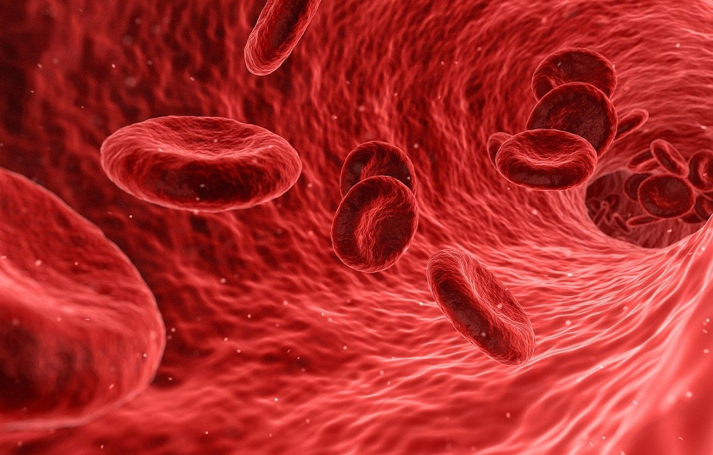

Constructed an appropriate time series model.Developed an appropriate regression model by eliminating any autocorrelation or heteroscedasticity problems. Assessed the goodness of fit of these models based on the AIC and BIC information criteria. Finally forecasted the analyzed series and i evaluated based on hit ratio and MSE

I cleaned and transformed the data from SQL and i presented the results in Tableau.
You can see below the results in TABLEAU and the query in SQL, also you can view the data source in my GitHub
I present some data cleaning techniques for big data along with the code along with the results and the files
I compared and analyzed data between Greek and German patients after surgery (laparoscopy, partial nephrectomy) for kidney tumors (recovery time, success of the operation). The research was carried out between medical clinics in Greece and Germany. The research was carried out using the statistical package SPSS
Below i present the results in TABLEAU coming from data from over 17000 movies
You can find both the cleaned and transformed data from excel along with the original
data sources

My goal was to find and analyze the best explanatory model through regression for the
hemoglobin(ΗΒ) of 20 patients affected by cancer
My goal was to create an algorithm in R to solve real Support Vector Machine(SVM) problems,more on project
Expanded the logistic regression problem and created an algorithm in R language
My goal is to create and algorithm from scratch to solve duality problems,more on project
{kind=link}
{kind=link}